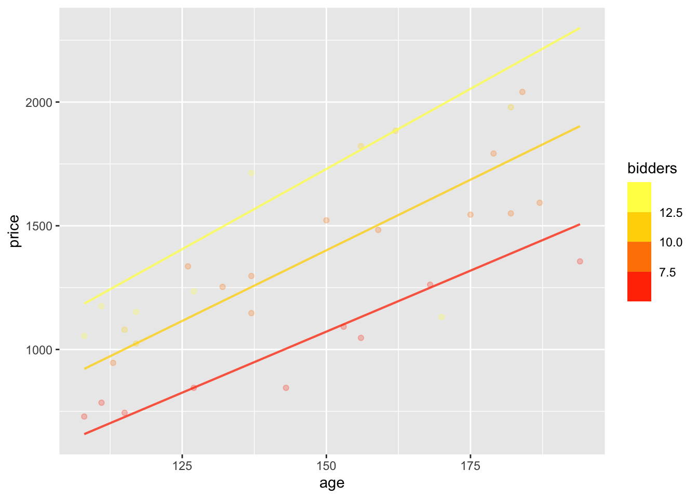
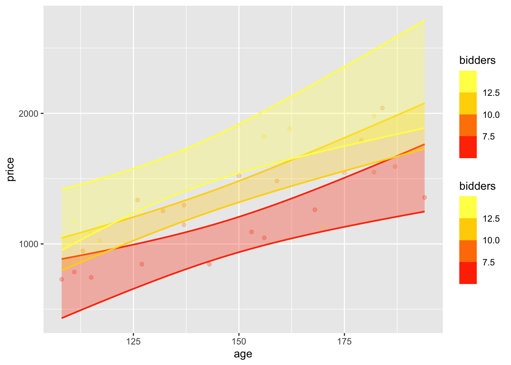

The data frame Clock_auction gives the sales price at auction of antique grandfathers’ clocks. Both the age of the clock and the number of bidders for the clock are presumed to affect the price.
Build a linear model price ~ age + bidders.
Find the effect sizes (i) with respect to price and (ii) with respect to bidders.
Does age increase or decrease the price? Give units for the effect size.
ANSWER
Note: These answers are more detailed than what’s expected from you.
First, the model and the coefficients:
price_model <-lm(price ~ age + bidders, data=Clock_auction)conf_interval(price_model)
# A tibble: 3 × 4
term .lwr .coef .upr
<chr> <dbl> <dbl> <dbl>
1 (Intercept) -1451. -922. -392.
2 age 8.33 11.1 13.8
3 bidders 37.5 64.0 90.6
This is, as usual for Math 300Z, a model with only linear terms, so the effect size with respect to an explanatory variable is exactly the same as the coefficient.
The coefficient on age is 11.1. This is positive, so we know that price increases with age.
The units tell us “11.1 what?” For a quantitative explanatory variable like age, the coefficient is always a rate: one quantity divided by another and so the units always read like “____ per ____.” The first blank gets filled in with the units of the response variable. Here, that’s dollars. The second blank is filled in with the units of the explanatory variable. Here, that’s years.
Putting everything together, the units of the age coefficient are dollars-per-year. 11.1 dollars-per-year means that, according to the model, increasing age by 1 year increases price by about 11.1 dollars.
Does bidders increase or decrease the price? Give units for the effect size.
ANSWER
The bidders coefficient is about 64 (with units). It is positive, so, according to the model, the more bidders the higher the price.
As before the units of the coefficient is the units of the response variable divided by the units of the explanatory variable: dollars per bidder.
Interpretation: According to the model, for every additional bidder on a clock (that is, increased competition), the auction price will go up by about $64.
What can you say about whether the age effect size or the bidders effect size is larger.
ANSWER
The two effect sizes have different units—dollars-per-year and dollars-per-bidder. There is no direct comparison to be made between quantities of with different units. (For example: Which is bigger? Two feet or a liter of water?)
Build a model with an interaction term: price ~ age + bidders and graph the model using model_plot(). Is the age/bidders interaction readily visible in the graph? Explain what you see that informs your answer.
ANSWER
To include an interaction term, use * instead of + to link the two explanatory variables involved.
price_model2 <-lm(price ~ age * bidders, data=Clock_auction)model_plot(price_model2)

The interaction shows up in the non-parallel slopes of the individual lines of price vs age. Each line corresponds to a different number of bidders. The interaction means that the effect size with respect to age depends on the number of bidders.
Another manifestation of the interaction is that the spacing in price between the model values for the different levels bidders (the vertical spacing between the lines) depends on age. The spacing is relatively small for ages near 100 yrs, and somewhat larger for ages near 200 yrs.
A separate question concerns sampling variation. Because of sampling variation, even if the “social-economic” process behind the auction had no interaction, one might appear in the model because of sampling variation. We haven’t yet talked about how to judge this, but here is a demonstration of how it works, using the confidence intervals on the coefficients.
I’m looking at the confidence interval on the coefficient of the interaction term (labeled as age:bidders). That interval includes zero, so there is no basis in these data to claim that the interaction is not zero.
Note also that adding the age:bidders term has caused all the confidence intervals to change, and all of them now include zero. This is an illustration of a general phenomenon: If you try to extract details from data, you sometimes end up with nothing.
For those who are concerned that this can happen, I’ll explain what’s going on in this particular case but warn you that this sort of reasoning is not part of what’s expected from you in Math 300Z. The new term, age:bidders, is strongly correlated with the ordinary bidders term.
lm(I(age*bidders) ~ bidders, data = Clock_auction) |>R2()
n k Rsquared F adjR2 p df.num df.denom
1 32 1 0.6266754 50.35902 0.6142312 4.742657e-08 1 30
Thus, the new term and bidders serve as proxies for one another. It becomes highly susceptible to sampling variation how to allocate “credit” to the individual terms: it can be done in any manner of ways giving almost equivalent results. This is a phenomenon called “multi-collinearity.”
Looking at the model and the confidence bands graphically shows the amount of sampling variability graphically.
model_plot(price_model2, interval="confidence")

It’s possible to place three parallel lines within each of the confidence bands, meaning that the data does not rule out the possibility that the lines are parallel.
Part 2
The Professional Golfers Association has an “index” used to rank golfers on the basis of the accuracy and distance of their drives. For a statistician, data on this provides an opportunity to “reverse engineer” the index. We can do this by modeling the relationship.
golf_mod <-lm(index ~ accuracy + dist, PGA_index)
The following table refers to a model with explanatory variables dist and accuracy. The table shows the .output of the model for each of four combinations of the explanatory variables.
A. At an accuracy of 50, what is the effect size of the .output with respect to dist? (Be sure to take into account both the difference in .output and the difference in dist.)
ANSWER
Looking at the two rows with accuracy equal to 50 pts, going from distance 100 to distance 200 increases the output by about 20 index pts. Thus, the effect size with respect to accuracy is $\(\frac{-42.1 - 21.5}{100-200} = \frac{20.4}{100} = 0.20\) with units of “index pts per yard”. [Thanks to Ruby H. for pointing out my mistake in an earlier edition of this solution.]
B. At a distance of 100, what is the effect size of the .output with respect to accuracy?
ANSWER
Looking at the two rows with distance 100, an increase in accuracy from 50 to 60 corresponds to a change in output of -42.1 to -39.6, a difference of +2.5. The effect size is
\[\frac{-42.1 - 39.6}{50 - 60} = \frac{-81.7}{10} = -8.2\] with units index-point per accuracy-point.